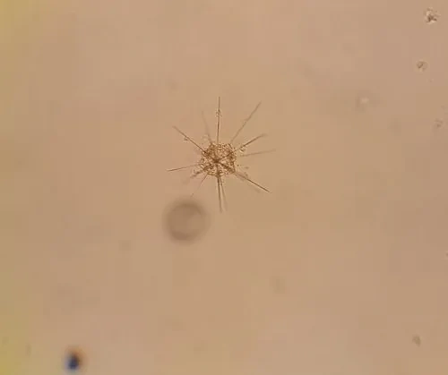

其他无脊椎动物 · 动物界
等辐骨虫 Acanthometra pellucida

细胞中央伸出二十根硫酸锶骨针、呈放射状的单细胞浮游生物，与共生藻共存，是海洋浮游群落的成员。
- 分类
- 门放射虫门纲等辐骨虫纲目等辐骨虫目科等辐骨虫科属等辐骨虫属
- 栖息环境
- 热带与温带海洋表层水体，营浮游生活
- 地理分布
- 世界各地的热带与温带海洋表层，中国南海和东海常见
- 保护级别
- 尚无保护级别；海水酸化与升温可能影响其分布
物种志
等辐骨虫是一种单细胞的浮游原生生物，细胞直径约零点一至零点五毫米，中央有一个球形或椭球形的细胞体，从中心向四周辐射伸出约二十根细长的骨针，骨针由硫酸锶构成，坚硬而透明，长度可达细胞直径的数倍，整体看上去像一颗微小的海胆或一颗星。细胞质分为内外两层，外层布满细小的网孔，内层含有细胞核和共生藻。
它分布于世界各地的热带和温带海洋表层，在中国南海和东海的浮游生物样品中常见，营浮游生活，靠骨针支撑起较大的体表面积，增加浮力并防御捕食者，同时用伪足捕捉小型浮游生物。它体内常共生着单细胞藻类，藻类通过光合作用提供部分养分，它则为藻类提供庇护和营养盐。它通过分裂进行无性生殖，环境不利时可形成休眠体。它死亡后骨针沉入海底，成为海洋沉积物的组成部分，在古海洋研究中被用作指示种。它尚无保护级别，海水酸化和升温可能影响其钙化与分布。
形态与习性
- 细胞直径约零点一至零点五毫米，球形或椭球形
- 骨针约二十根，由硫酸锶构成，向外辐射
- 共生体内共生单细胞藻类，互利共生
- 栖息水层热带与温带海洋表层
- 食性用伪足捕捉小型浮游生物
- 沉积死亡后骨针沉入海底，成为沉积物
趣味知识
- 它用二十根透明的硫酸锶骨针把自己撑成一颗小星星。
- 它的骨针沉到海底后能保存很久，成了古海洋研究的材料。
- 它体内住着会光合作用的藻类，等于随身带了一座小菜园。